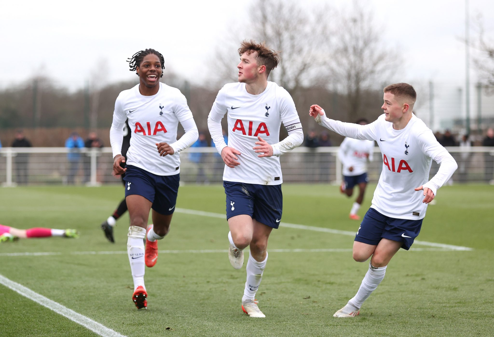
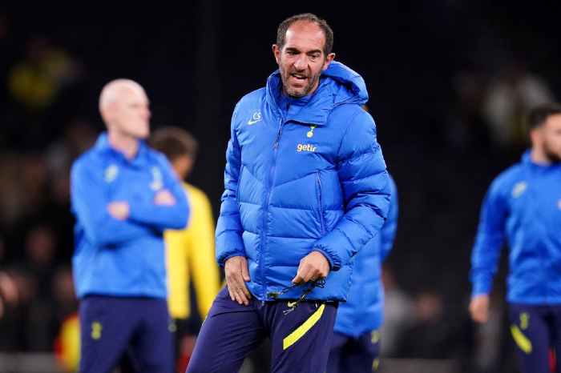
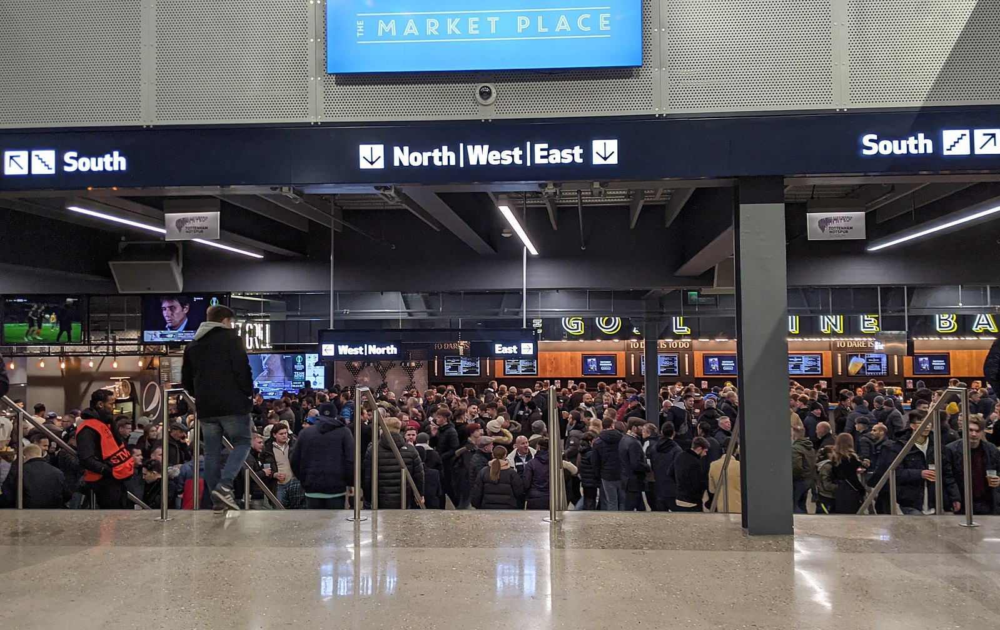

The Game Is About Glory.
The words of our 1961 Double-winning captain Danny Blanchflower reverberate around Tottenham Hotspur and everything we do, to this day and into the future.
We are about playing with flair, style and passion. Players, coaches, staff and fans – we move forward, together as one.
We’re hungry, we’re progressive, we’ve built a brand new world-class Training Centre and moved into an outstanding, modern new stadium, overlapping the site of White Hart Lane, where we played our home games for 118 years.

February 27, 2023
Under-18 Premier League Cup semi-final details confirmed
Our Under-18s have been drawn away to Sheffield United in the semi-finals of the Under-18 Premier League Cup.

February 24, 2023
Team news ahead of Chelsea - Cristian’s latest on the squad and Antonio
Cristian Stellini reports no new injury concerns going into Sunday’s huge derby against Chelsea at Tottenham Hotspur Stadium (1.30pm).

February 24, 2023
Hundreds visit Tottenham Hotspur Stadium and walk away with new jobs
Tottenham Hotspur Stadium opened its doors to more than 800 local people on Thursday - with an incredible 563 walking away with a job offer.